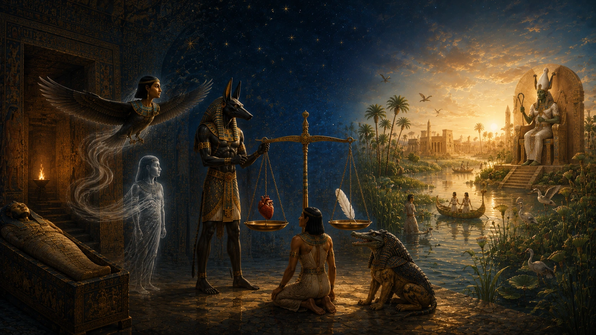

Antik Mısır denildiğinde insanların aklına genellikle piramitler, mumyalar ve görkemli mezarlar gelir. Bu yapıların ortak bir özelliği vardır: Hepsi ölümle ilişkilidir. Ancak Mısırlıların bıraktığı eserleri yalnızca ölüm korkusunun sonucu olarak görmek büyük bir yanılgı olur. Çünkü onlar için ölüm, yaşamın sona erdiği bir olay değil, yeni bir varoluş biçimine geçişti.
Bugün bize ürkütücü görünen mumyalama uygulamaları, devasa mezar kompleksleri ve ölüm ritüelleri, aslında tek bir amaca hizmet ediyordu. İnsanın ölümden sonra da yaşamaya devam edebilmesi. Antik Mısırlılar, fiziksel bedenin ölümünü kabul ediyor ancak ruhun varlığını sürdürdüğüne inanıyordu. Bu nedenle ölüm, son değil; dikkatle hazırlanılması gereken uzun bir yolculuğun başlangıcı olarak görülüyordu.
Bu inanç, Mısır uygarlığının neredeyse her alanını etkiledi. Firavunların inşa ettirdiği piramitlerden sıradan insanların mezarlarına bıraktığı eşyalara kadar pek çok unsurun temelinde ölümden sonraki yaşam düşüncesi bulunuyordu. Bir kişinin nasıl gömüleceği, mezarına nelerin konulacağı, hangi duaların okunacağı ve bedeninin nasıl korunacağı gibi konular son derece önemli kabul ediliyordu. Çünkü bütün bu hazırlıkların, ruhun öteki dünyadaki kaderini doğrudan etkilediğine inanılıyordu.
Mısırlılar için asıl mesele ölüm değildi. Asıl mesele ölümden sonra ne olacağıydı.
İşte bu nedenle Antik Mısır'ın ölüm anlayışı, insanlık tarihinin en ayrıntılı ve en karmaşık inanç sistemlerinden biri hâline gelmiştir. Ölümden sonraki yaşam hakkındaki düşünceleri yalnızca dini metinlerde değil, mezar duvarlarında, tapınaklarda ve günümüze ulaşan sayısız arkeolojik buluntuda da karşımıza çıkar.
Bu inanç sistemi öylesine güçlüydü ki, binlerce yıl boyunca milyonlarca insan yaşamını ve ölümünü buna göre şekillendirdi.
Mısırlılar Ölümü Nasıl Görüyordu?
Modern dünyada ölüm çoğu zaman yaşamın kesin sonu olarak değerlendirilir. Antik Mısırlılar ise bu konuda oldukça farklı düşünüyordu. Onlara göre ölüm, insanın varlığını tamamen ortadan kaldıran bir olay değildi. Beden yaşamını yitirse bile kişinin özü varlığını sürdürmeye devam ediyordu.
Bu nedenle Mısır dininde ölüm bir son değil, geçiş süreci olarak kabul edilmiştir. İnsan dünyasındaki yaşam sona eriyor, ancak ruh başka bir düzlemde yolculuğuna devam ediyordu. Bu yeni yaşamın başarılı olabilmesi için ise kişinin doğru şekilde hazırlanması gerekiyordu.
Mısırlılar ölümden sonraki yaşamı soyut bir kavram olarak düşünmüyordu. Onların gözünde öteki dünya son derece gerçek bir yerdi. Tarlaları, nehirleri, yolları, kapıları ve hatta çeşitli tehlikeleri vardı. İnsan öldüğünde bilinmeyen bir boşluğa gitmiyor, yeni bir dünyaya adım atıyordu.
Bu nedenle cenaze ritüelleri büyük önem taşıyordu. Çünkü ruhun bu yolculuk sırasında ihtiyaç duyacağı her şeyin önceden hazırlanması gerektiğine inanılıyordu. Mezarlara bırakılan yiyecekler, günlük eşyalar, heykeller ve kutsal metinler bu düşüncenin sonucuydu.
Ancak Mısırlıların ölüm anlayışını gerçekten anlamak için önce onların insan ruhunu nasıl tanımladığına bakmak gerekir. Çünkü Antik Mısır'a göre insan yalnızca et ve kemikten oluşan bir varlık değildi.
İnsan Ruhu Tek Parçadan mı Oluşuyordu?
Antik Mısır'ın ölümden sonraki yaşam anlayışını modern insan için ilginç kılan şeylerden biri, ruh kavramına yükledikleri anlamdır. Günümüzde birçok insan ruhu tek ve bütün bir varlık olarak düşünür. Oysa Mısırlılar için insan bundan çok daha karmaşık bir yapıya sahipti. Onlara göre bir insan yalnızca bedenden ve tek bir ruhtan oluşmuyordu. İnsan varlığını meydana getiren farklı unsurlar bulunuyordu ve ölümden sonra bunların her biri ayrı bir önem kazanıyordu.
Bu unsurların en önemlilerinden biri "Ka" olarak adlandırılıyordu. Ka, insanın yaşam gücü olarak kabul ediliyordu. Bir kişi doğduğunda onunla birlikte var olan ve yaşamı boyunca ona eşlik eden ilahi bir özdü. Ölüm gerçekleştiğinde Ka yok olmuyor, varlığını sürdürüyordu. Ancak yaşamına devam edebilmesi için beslenmeye ihtiyaç duyduğuna inanılıyordu. İşte mezarlara bırakılan yiyecek sunularının temel nedenlerinden biri buydu. Mısırlılar, Ka'nın bu sunulardan manevi olarak faydalandığını düşünüyordu.
Bir diğer önemli unsur ise "Ba" idi. Ba çoğu zaman insan başlı bir kuş şeklinde tasvir edilirdi. Bunun nedeni, Ba'nın kişinin bireyselliğini, karakterini ve kişiliğini temsil etmesiydi. Ölümden sonra Ba'nın mezardan ayrılarak dış dünyada dolaşabildiğine inanılıyordu. Ancak geceleri tekrar bedene dönmesi gerekiyordu. Bu nedenle bedenin korunması son derece önemliydi. Eğer beden yok olur veya tanınamayacak hâle gelirse Ba'nın geri dönecek bir yeri kalmayacaktı.
İşte mumyalama geleneğinin arkasındaki düşüncelerden biri de buydu. Mısırlılar yalnızca ölüyü korumaya çalışmıyor, aynı zamanda ruhun farklı parçalarının yeniden birleşebilmesi için gerekli koşulları sağlamaya çalışıyordu.
Ruhun bir diğer yönü "Akh" olarak adlandırılıyordu. Akh, ölümden sonraki dönüşümün başarıyla tamamlanması sonucunda ortaya çıkan kutsal ve yüce varoluş biçimiydi. Eğer kişi gerekli sınavları geçer, doğru şekilde gömülür ve ölümden sonraki yolculuğunu başarıyla tamamlarsa Akh hâline gelebiliyordu. Bu durum, sonsuz yaşama ulaşmanın ve tanrılarla uyum içinde var olmanın simgesiydi.
Mısırlılar ayrıca kalbe de özel bir önem veriyordu. Bugün beyni düşüncenin merkezi olarak kabul ediyoruz. Ancak Antik Mısır'da bu rol kalbe aitti. İnsanların düşünceleri, anıları, duyguları ve ahlaki karakterleri kalpte saklanıyordu. Bu nedenle mumyalama sırasında birçok organ çıkarılırken kalp genellikle yerinde bırakılıyordu. Çünkü ölümden sonraki yargılamada kişinin bütün yaşamı bu kalp üzerinden değerlendirilecekti.
Bir başka önemli unsur ise isimdi. Mısırlılar bir kişinin adının yalnızca onu tanımlayan bir sözcük olmadığına inanıyordu. İsim, kişinin varlığının ayrılmaz bir parçasıydı. Bir insanın adı unutulursa veya yok edilirse, onun varlığı da tehlikeye girebilirdi. Bu yüzden mezar duvarlarına isimler yazılıyor, heykellere işleniyor ve gelecek kuşakların bunları hatırlaması isteniyordu.
Bütün bu unsurlar bir araya geldiğinde ortaya son derece karmaşık bir insan anlayışı çıkıyordu. Mısırlılar için ölümden sonraki yaşamın başarılı olabilmesi yalnızca ruhun hayatta kalmasına bağlı değildi. Ka'nın, Ba'nın, kalbin, ismin ve bedenin belirli bir düzen içinde varlığını sürdürmesi gerekiyordu.
Bu nedenle ölümden sonraki yaşam inancı yalnızca dini bir düşünce değil, aynı zamanda cenaze ritüellerinden mezar mimarisine kadar uzanan dev bir sistemin temelini oluşturuyordu.
Mumyalar Neden Bu Kadar Önemliydi?
Antik Mısır denildiğinde akla gelen ilk şeylerden biri şüphesiz mumyalardır. Ancak modern insan için çoğu zaman ürkütücü veya garip görünen bu uygulama, Mısırlılar açısından son derece mantıklı bir amaca hizmet ediyordu. Onlar için mumyalama, ölünün bedenini korumaktan çok daha fazlasını ifade ediyordu.
Mısırlılar ruhun bazı parçalarının bedene ihtiyaç duyduğuna inanıyordu. Özellikle Ba'nın geceleri geri dönebilmesi ve ölümden sonraki yaşamın sürdürülebilmesi için bedenin tanınabilir durumda kalması gerekiyordu. Eğer beden tamamen yok olur ya da çürürse ruhun düzeni de bozulabilirdi.
Bu düşünce nedeniyle beden büyük bir özenle korunuyordu. Mumyalama işlemi yalnızca teknik bir uygulama değildi; aynı zamanda kutsal bir ritüeldi. Rahipler belirli dualar okuyor, tanrılardan yardım diliyor ve ölen kişiyi ölümden sonraki yaşama hazırlıyordu. Bu süreçte Anubis'in koruyuculuğuna özel önem veriliyordu çünkü o, cenaze ritüellerinin ve mumyalamanın kutsal koruyucusu olarak kabul ediliyordu.
Mumyalama sayesinde bedenin mümkün olduğunca uzun süre korunması amaçlanıyordu. Böylece ruhun farklı parçaları arasındaki bağ sürdürülebilecek ve kişi ölümden sonraki yaşamına devam edebilecekti. Bu nedenle mumyalar, Antik Mısır'ın ölüm takıntısının değil; ölümden sonraki yaşama duyduğu inancın bir sonucuydu.
Bugün arkeologların bulduğu mumyalar, yalnızca geçmişten kalan bedenler değildir. Aynı zamanda Mısırlıların ölümden sonra yaşamın devam ettiğine ne kadar güçlü şekilde inandıklarının da somut kanıtlarıdır.
Fakat bedenin korunması tek başına yeterli değildi. Mısırlılara göre ölümden sonra ruhu bekleyen uzun ve zorlu bir yolculuk vardı. İşte bu yolculuk, Antik Mısır'ın en ilginç inançlarından bazılarını ortaya çıkaracaktı.
Ölümden Sonra Ruhu Neler Bekliyordu?
Antik Mısırlılar için ölüm, bir kapının kapanması değil, başka bir kapının açılmasıydı. Ancak bu yeni dünyanın huzurlu ve kolay bir yer olduğu düşünülmüyordu. Ölümden sonra başlayan yolculuk uzun, karmaşık ve çeşitli tehlikelerle doluydu. Bu nedenle bir insanın yalnızca ölmesi yeterli değildi; aynı zamanda bu yolculuğa hazırlanması gerekiyordu.
Mısırlılar ruhun bedenini terk ettikten sonra Duat adı verilen öteki dünyaya geçtiğine inanıyordu. Duat, günümüzdeki cennet veya cehennem kavramlarına tam olarak benzemez. Burası hem gizemli hem de tehlikeli bir bölgeydi. İçinde karanlık geçitler, kutsal kapılar, göller, yollar ve çeşitli doğaüstü varlıklar bulunuyordu. Ruhun nihai hedefe ulaşabilmesi için bu engelleri aşması gerekiyordu.
Bu yolculuk sırasında bilgi büyük önem taşıyordu. Mısırlılar, bazı kapıların yalnızca doğru isimler bilindiğinde açılabileceğine inanıyordu. Bazı varlıklarla karşılaşıldığında belirli sözlerin söylenmesi gerekiyordu. Yanlış bir cevap ya da eksik bir bilgi, ruhun ilerlemesini engelleyebilirdi. İşte bu nedenle Ölüler Kitabı yalnızca dini bir eser değil, aynı zamanda ölümden sonraki yolculuğun rehberi olarak görülüyordu.
Ölüler Kitabı'nda yer alan birçok metin, ruhun bu yolculuk sırasında karşılaşabileceği tehlikelere karşı hazırlanmıştır. Dev yılanlar, düşmanca varlıklar, ateş gölleri ve çeşitli sınavlar bu metinlerde ayrıntılı biçimde anlatılır. Modern okuyucu için bunlar mitolojik hikâyeler gibi görünebilir. Ancak Antik Mısırlılar için son derece gerçek kabul edilen bir dünyanın parçalarıydı.
Yolculuğun en dikkat çekici yönlerinden biri de ruhun tamamen yalnız olmamasıdır. Çeşitli tanrılar bu süreçte önemli roller üstleniyordu. Anubis rehberlik ediyor, Thoth bilgeliği temsil ediyor, Ra kozmik düzenin merkezinde yer alıyor ve Osiris nihai hedef olarak ruhu bekliyordu. Bu nedenle ölümden sonraki yaşam yalnızca bireysel bir deneyim değil, aynı zamanda tanrılarla kurulan kutsal ilişkinin de devamı olarak görülüyordu.
Ancak bütün bu yolculuğun merkezinde tek bir olay bulunuyordu. Mısırlılar için ölümden sonraki kaderi belirleyen asıl an, ruhun karşılaşacağı büyük yargılamaydı.
Kalbin Tartılması Töreni Nedir?
Antik Mısır'ın ölüm anlayışını tek bir sahneyle anlatmak gerekseydi, büyük ihtimalle Kalbin Tartılması seçilirdi. Çünkü bu tören, insanların ölümden sonraki kaderini belirleyen en önemli aşama olarak kabul ediliyordu.
Mısırlılara göre insan yaşamı boyunca yaptığı her şeyi yanında taşıyordu. Hiçbir davranış tamamen unutulmuyor, hiçbir düşünce tamamen kaybolmuyordu. Bütün bunlar kişinin kalbinde saklanıyordu. Bu nedenle ölümden sonraki yargılamada değerlendirilen şey yalnızca kişinin sözleri değil, yaşamının tamamıydı.
Yargılama sırasında Anubis büyük bir terazinin başında dururdu. Terazinin bir kefesine kişinin kalbi yerleştirilir, diğer kefesine ise Ma'at'ın tüyü konulurdu. Ma'at yalnızca bir tanrıça değildi; aynı zamanda doğruluğun, adaletin ve evrensel düzenin sembolüydü. Bu nedenle kalbin tüy ile dengelenmesi, kişinin yaşamı boyunca bu düzene ne kadar uygun yaşadığını gösteriyordu.
Eğer kalp tüy kadar hafif çıkarsa kişi yargılamayı başarıyla geçmiş sayılıyordu. Bu durum onun adil, dürüst ve düzenli bir yaşam sürdüğünün işaretiydi. Ancak kalp ağır gelirse sonuç çok daha ciddi oluyordu.
Bu noktada Ammit adı verilen korkutucu yaratık ortaya çıkıyordu. Aslanın, timsahın ve su aygırının özelliklerini taşıyan bu varlığın görevi başarısız ruhları yok etmekti. Mısırlılar için en büyük korku işkence görmek değildi. Asıl korku, sonsuz yaşam hakkını kaybetmek ve tamamen yok olmaktı.
Bu sahnenin en dikkat çekici yönlerinden biri, Antik Mısır dininin yalnızca ritüellere dayanmadığını göstermesidir. Bir kişinin mezarı ne kadar görkemli olursa olsun, ne kadar çok dua okursa okusun ya da ne kadar zengin olursa olsun, sonunda yaşamı boyunca nasıl davrandığı önem taşıyordu. Bu nedenle Kalbin Tartılması töreni aynı zamanda güçlü bir ahlaki mesaj içeriyordu.
Yargılamayı başarıyla geçen ruhlar için ise yolculuk henüz bitmemişti. Çünkü onları ölümden sonraki dünyanın hükümdarı bekliyordu.
Osiris'in Mahkemesi ve Nihai Yargı
Kalbin Tartılması törenini başarıyla geçen ruhlar, Antik Mısır'ın en önemli tanrılarından biri olan Osiris'in huzuruna çıkıyordu. Bu an, ölümden sonraki yolculuğun en kritik noktalarından biri olarak kabul ediliyordu.
Tasvirlerde Osiris genellikle büyük bir taht üzerinde otururken gösterilir. Başında kutsal tacı bulunur, elinde krallığın sembollerini taşır ve çevresinde çeşitli tanrılar yer alır. Bu görüntü onun yalnızca bir tanrı değil, ölümden sonraki dünyanın hükümdarı olduğunu vurgular.
Osiris'in huzuruna ulaşmak, ruhun en büyük hedeflerinden biriydi. Çünkü bu aşamaya kadar gelebilmiş olmak zaten birçok sınavın başarıyla tamamlandığını gösteriyordu. Ancak asıl önemli olan, kişinin sonsuz yaşama layık görülüp görülmeyeceğiydi.
Osiris'in rolü çoğu zaman yanlış anlaşılır. O, modern anlamda ceza dağıtan bir hâkim değildir. Daha çok ölümden sonraki düzenin ve yeniden doğuşun sembolüdür. Onun dünyasına kabul edilmek, kişinin ölümden sonraki yaşamı kazanması anlamına gelir.
Bu nedenle Mısırlılar mezarlarına yalnızca yiyecekler veya değerli eşyalar koymuyordu. Aynı zamanda dualar, kutsal metinler ve çeşitli koruyucu nesneler de bırakıyordu. Amaç, ruhun Osiris'in huzuruna ulaşmasını ve burada kabul görmesini sağlamaktı.
Başarılı olan ruhları ise Mısırlıların hayal ettiği en büyük ödül bekliyordu: Sonsuz yaşam.
Sonsuz Yaşam Nasıl Bir Yerdi?
Antik Mısırlılar ölümden sonraki yaşamı belirsiz ve sisler içindeki bir dünya olarak hayal etmiyordu. Tam tersine, ulaşmayı umdukları yer son derece somut ve tanımlanabilir bir yerdi. Bu kutsal bölgeye genellikle "Aaru" ya da "Kamış Tarlaları" adı veriliyordu.
Aaru, birçok açıdan Mısır'ın ideal hâline benziyordu.
Burada verimli tarlalar uzanıyor, kanallar boyunca temiz sular akıyor ve insanlar bolluk içinde yaşıyordu. Ancak bu dünya, insanların yeryüzünde deneyimlediği hayatın kusursuzlaştırılmış bir versiyonuydu. Hastalıklar, açlık, savaşlar ve acılar burada yer almıyordu. İnsanlar sevdikleriyle yeniden bir araya gelebiliyor ve sonsuza kadar huzur içinde yaşayabiliyordu.
Bu durum ilk bakışta şaşırtıcı gelebilir. Çünkü günümüzde birçok insan ölümden sonraki yaşamı tamamen farklı ve ruhani bir varoluş olarak düşünür. Antik Mısırlılar ise yaşadıkları dünyayı seviyordu. Onların amacı dünyadan kaçmak değil, dünyanın en iyi hâlinde yaşamaya devam etmekti.
Bu nedenle mezarlara günlük yaşamda kullanılan pek çok eşya bırakılıyordu. Mobilyalar, kaplar, giysiler, takılar ve hatta yiyecekler bile öteki dünyada kullanılmak üzere hazırlanıyordu. Mısırlılar bunların yalnızca sembolik nesneler olmadığını, ölümden sonra da gerekli olacağını düşünüyordu.
Bazı mezarlarda bulunan küçük insan heykelcikleri de bu inancın ilginç örneklerinden biridir. Şabti adı verilen bu figürlerin, ölen kişi adına öteki dünyada çalışacağına inanılıyordu. Böylece kişi sonsuz yaşamında ağır işlerle uğraşmak zorunda kalmayacaktı.
Aaru'nun tasvirleri incelendiğinde dikkat çeken bir başka nokta da doğayla kurulan güçlü bağdır. Bereketli tarlalar, düzenli sulama kanalları ve sonsuz hasat sahneleri sık sık karşımıza çıkar. Bunun nedeni Nil Nehri'nin Mısır yaşamındaki merkezi rolüdür. Nil'in sağladığı bereket nasıl yeryüzündeki hayatı mümkün kılıyorsa, Aaru da bu bereketin sonsuz hâli olarak düşünülüyordu.
Dolayısıyla Mısırlılar için ölümden sonraki yaşam bilinmeyen bir boşluk değil, ideal koşullar altında devam eden bir varoluştu. Onlar ölümden sonra yok olmayı değil, daha kusursuz bir yaşam sürmeyi umut ediyordu.
Herkes Sonsuz Yaşama Ulaşabiliyor Muydu?
Bu sorunun cevabı zaman içinde değişmiştir.
Antik Mısır tarihinin erken dönemlerinde ölümden sonraki yaşamın ayrıcalıklı bir hak olduğu düşünülüyordu. Özellikle Eski Krallık döneminde sonsuz yaşama ulaşma fikri büyük ölçüde firavunlarla ilişkilendiriliyordu. Firavunlar tanrılarla yakın bağlara sahip kabul ediliyor ve ölümden sonra onların arasına katılabilecekleri düşünülüyordu.
Ancak yüzyıllar geçtikçe bu anlayış değişmeye başladı.
Orta Krallık ve özellikle Yeni Krallık dönemlerinde ölümden sonraki yaşam fikri daha geniş kesimlere yayıldı. Artık yalnızca firavunlar değil, sıradan insanlar da gerekli hazırlıkları yaptıkları takdirde sonsuz yaşama ulaşabileceklerine inanıyordu.
Yine de bu durum herkesin otomatik olarak kurtulacağı anlamına gelmiyordu.
Mısırlılara göre ölümden sonraki yaşam bir ödüldü ve bu ödül belirli şartlara bağlıydı. Kişinin doğru şekilde gömülmesi, gerekli ritüellerin uygulanması ve ölümden sonraki yolculuk için hazırlanması önemliydi. Ancak bütün bunlardan daha önemlisi kişinin yaşamı boyunca nasıl davrandığıydı.
Kalbin Tartılması sahnesi bu düşüncenin en açık örneğidir. Bir insan ne kadar zengin olursa olsun, ne kadar görkemli bir mezara sahip olursa olsun, yaşamı boyunca adaletsiz davranmışsa sonsuz yaşama ulaşamayabilirdi. Bu nedenle Mısır dini yalnızca ritüeller üzerine kurulu değildi; aynı zamanda güçlü bir ahlaki boyuta da sahipti.
Bu durum Antik Mısır'ın ölüm anlayışını diğer birçok eski inanç sisteminden ayırır. Çünkü burada yalnızca tanrılara sunu vermek değil, doğru bir yaşam sürmek de büyük önem taşımaktadır.
Antik Mısır'da Ölüm Korkulan Bir Şey Miydi?
Günümüzde Antik Mısır'a baktığımızda karşımıza çıkan mumyalar, mezarlar ve cenaze ritüelleri nedeniyle Mısırlıların ölüm fikrine saplantılı olduğu düşünülebilir. Ancak gerçekte onların asıl korkusu ölümün kendisi değildi.
Korktukları şey hazırlıksız yakalanmaktı.
Mısırlılar ölümün kaçınılmaz olduğuna inanıyordu. Bu nedenle bütün mesele ölümden kaçmak değil, ölümden sonra ne olacağını garanti altına almaktı. İnsan yaşamı sona erecekti; ancak ruhun yolculuğunun başarıyla devam etmesi gerekiyordu.
Bir başka büyük korku ise unutulmaktı.
Antik Mısır'da bir kişinin adının yaşatılması son derece önemliydi. İsim, kişinin varlığının ayrılmaz bir parçası olarak görülüyordu. Bu nedenle mezarlara isimler yazılıyor, heykeller yapılıyor ve insanların hatırlanması isteniyordu. Eğer bir kişinin adı tamamen unutulursa, onun varlığının da tehlikeye gireceğine inanılıyordu.
Bu yüzden firavunların anıtlar inşa ettirmesi yalnızca güç gösterisi değildi. Aynı zamanda isimlerini sonsuza kadar yaşatma çabasıydı.
Ölüm korkusu yerine süreklilik arzusu, Antik Mısır'ın cenaze kültürünü şekillendiren temel unsurlardan biri olmuştur. Mısırlılar için önemli olan ölümden kaçmak değil, ölümün ötesinde de var olabilmekti.
Bu düşünce, onların binlerce yıl boyunca inşa ettiği mezarlarda, yazdığı metinlerde ve uyguladığı ritüellerde açıkça görülebilir.
Yaygın Yanlış Bilgiler
Antik Mısır'ın ölümden sonraki yaşam anlayışı hakkında günümüzde birçok yanlış bilgi bulunmaktadır. Bunların başında Mısırlıların ölümden sonra otomatik olarak cennete gittiği düşüncesi gelir. Oysa onların inancına göre ruhun çeşitli sınavlardan geçmesi ve yargılanması gerekiyordu.
Bir başka yaygın yanlış bilgi, mumyalamanın yalnızca bedeni korumak için yapıldığı yönündedir. Gerçekte mumyalama, ruhun farklı parçalarının varlığını sürdürebilmesi için gerekli görülen dini bir uygulamaydı. Bu nedenle yalnızca fiziksel değil, aynı zamanda manevi bir öneme sahipti.
Bazı insanlar Ölüler Kitabı'nın ölümden sonraki yaşamı garanti altına aldığını düşünür. Oysa bu metinler bir tür rehber olarak kabul ediliyordu. Kişinin ahlaki yaşamı ve ilahi yargılamadaki başarısı hâlâ belirleyici unsurlardı.
Ayrıca Mısırlıların ölüm kültürünü karamsar ve karanlık bir sistem olarak görmek de yanıltıcıdır. Çünkü onların bütün hazırlıkları ölüm için değil, yaşamın devamı içindi. Mezarlar, dualar ve ritüeller aslında umutla bağlantılıydı.
Bu nedenle Antik Mısır'ın ölüm anlayışı, çoğu zaman sanıldığından çok daha yaşam odaklı bir dünya görüşünü yansıtır.
Sonuç: Antik Mısırlılar Ölümden Sonra Ne Olduğuna Neden Bu Kadar Önem Veriyordu?
Antik Mısır'ın bıraktığı mirasa baktığımızda piramitleri, mumyaları ve görkemli mezarları görmek kolaydır. Ancak bütün bu eserlerin arkasında yatan düşünceyi anlamak çok daha önemlidir. Çünkü Mısırlılar için ölüm, yaşamın son noktası değildi. Onların gözünde ölüm, dikkatle hazırlanılması gereken yeni bir başlangıçtı.
Bu nedenle bedenlerini mumyalıyor, mezarlarını özenle inşa ediyor ve ölüler için kutsal metinler hazırlıyorlardı. Amaç yalnızca ölüyü onurlandırmak değildi. Amaç, ruhun ölümden sonraki yolculuğunu başarıyla tamamlayabilmesini sağlamaktı.
Mısırlılar insanın yalnızca bedenden oluşmadığına inanıyordu. Ka'nın, Ba'nın, kalbin ve diğer ruhsal unsurların varlığını sürdürebilmesi için belirli şartların yerine getirilmesi gerekiyordu. Bu yüzden ölümden sonraki yaşam inancı, Antik Mısır toplumunun dini düşüncesinden sanatına, mimarisinden günlük yaşamına kadar her alanı etkilemiştir.
Ölüler Kitabı'nın rehberliği, Anubis'in koruyuculuğu, Kalbin Tartılması'nın ahlaki yargısı ve Osiris'in huzurunda sonsuz yaşama ulaşma umudu, bu inanç sisteminin temel taşlarını oluşturuyordu. Bütün bu unsurlar bir araya geldiğinde ortaya insanlık tarihinin en ayrıntılı ölüm sonrası yaşam tasavvurlarından biri çıkmıştır.
Bugün binlerce yıl sonra bile Antik Mısır'ın ölüm anlayışı ilgi çekmeye devam ediyor. Bunun nedeni yalnızca gizemli ritüeller veya görkemli mezarlar değildir. Asıl neden, bu inancın insanların her çağda sorduğu aynı soruya cevap aramasıdır.
Ölümden sonra ne olur?
Antik Mısırlılar bu soruya kendi cevaplarını vermişti. Onlara göre ölüm bir son değil, doğru hazırlanıldığında sonsuz yaşama açılan bir kapıydı.
Sık Sorulan Sorular
Antik Mısırlılar ölümden sonra yaşama inanıyor muydu?
Evet. Antik Mısır dininin temel unsurlarından biri ölümden sonraki yaşam inancıydı. Mısırlılar beden öldükten sonra ruhun varlığını sürdürdüğüne ve çeşitli sınavlardan geçerek sonsuz yaşama ulaşabileceğine inanıyordu.
Mısırlılar neden ölülerini mumyalıyordu?
Mumyalamanın amacı yalnızca bedeni korumak değildi. Mısırlılar, ruhun bazı parçalarının bedenle bağlantısını sürdürebilmesi için cesedin mümkün olduğunca iyi korunması gerektiğine inanıyordu. Bu nedenle mumyalama ölümden sonraki yaşam hazırlığının önemli bir parçasıydı.
Kalbin Tartılması nedir?
Kalbin Tartılması, ölümden sonraki yargılamanın en önemli aşamasıdır. Bu törende kişinin kalbi, doğruluk ve adaletin simgesi olan Ma'at'ın tüyüyle tartılırdı. Kalbi hafif gelenler sonsuz yaşama ulaşabilirken, başarısız olanlar bu hakkı kaybediyordu.
Anubis'in ölümden sonraki yaşamdaki görevi neydi?
Anubis cenaze ritüellerinin ve mumyalamanın koruyucu tanrısıydı. Ayrıca Kalbin Tartılması sahnesinde teraziyi gözeten ve yargılamanın doğru şekilde gerçekleşmesini sağlayan figür olarak kabul ediliyordu.
Osiris neden ölümden sonraki yaşamla ilişkilendiriliyordu?
Mitolojiye göre Osiris öldürülmüş, yeniden dirilmiş ve daha sonra ölüler dünyasının hükümdarı hâline gelmiştir. Bu nedenle ölümden sonraki yaşamın ve yeniden doğuşun en önemli sembollerinden biri olarak görülüyordu.
Ölüler Kitabı ne işe yarıyordu?
Ölüler Kitabı, ruhun ölümden sonraki yolculuğunda karşılaşacağı tehlikeler ve sınavlar için hazırlanmış metinlerden oluşuyordu. İçinde dualar, büyüler, ilahiler ve rehberlik eden bilgiler bulunuyordu.
Antik Mısır'da cennet anlayışı var mıydı?
Evet. Mısırlılar Aaru ya da Kamış Tarlaları olarak bilinen kutsal bir bölgeye inanıyordu. Burada insanlar huzur, bereket ve bolluk içinde sonsuz yaşamlarını sürdürebiliyordu.
Antik Mısır'da herkes sonsuz yaşama ulaşabiliyor muydu?
Hayır. Sonsuz yaşama ulaşabilmek için kişinin ölümden sonraki yolculuğunu başarıyla tamamlaması ve ilahi yargılamadan geçmesi gerekiyordu. Mısırlılar için ahlaki davranışlar da bu süreçte büyük önem taşıyordu.
Kaynakça
- Assmann, Jan. Death and Salvation in Ancient Egypt. Cornell University Press, 2005.
- Taylor, John H. Death and the Afterlife in Ancient Egypt. University of Chicago Press, 2001.
- Hornung, Erik. The Ancient Egyptian Books of the Afterlife. Cornell University Press, 1999.
- Pinch, Geraldine. Egyptian Mythology: A Guide to the Gods, Goddesses, and Traditions of Ancient Egypt. Oxford University Press, 2004.
- Wilkinson, Richard H. The Complete Gods and Goddesses of Ancient Egypt. Thames & Hudson, 2003.
- Hart, George. The Routledge Dictionary of Egyptian Gods and Goddesses. Routledge, 2005.
- Faulkner, Raymond O. The Ancient Egyptian Book of the Dead. British Museum Press, 2010.
- Allen, James P. Middle Egyptian Literature: Eight Literary Works of the Middle Kingdom. Cambridge University Press, 2015.
- British Museum – Ancient Egyptian Religion Collection.
- The Metropolitan Museum of Art – Egyptian Funerary Practices Collection.
- University College London (UCL) – Digital Egypt for Universities Project.
- Griffith Institute, Oxford – Ancient Egyptian Religious Texts Archive.